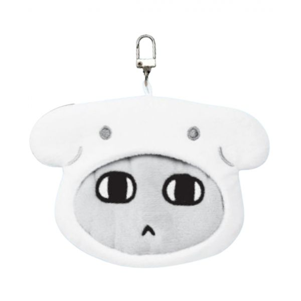
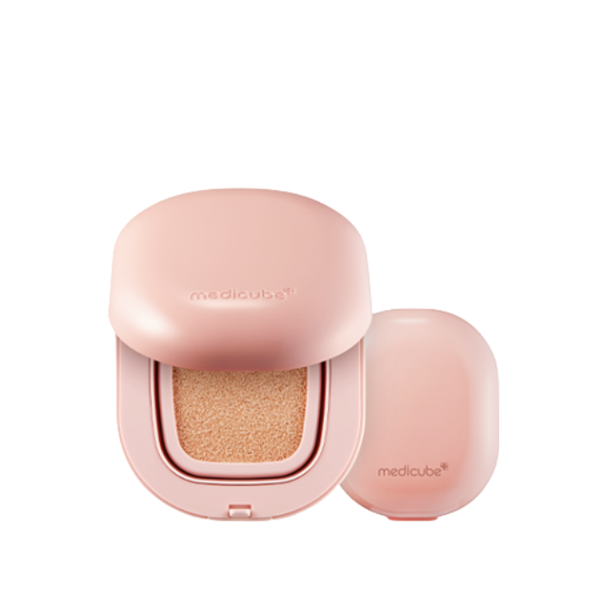
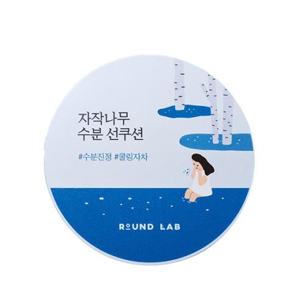
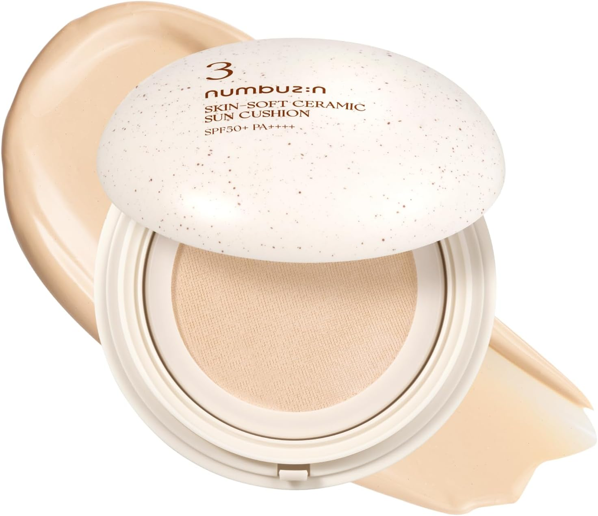
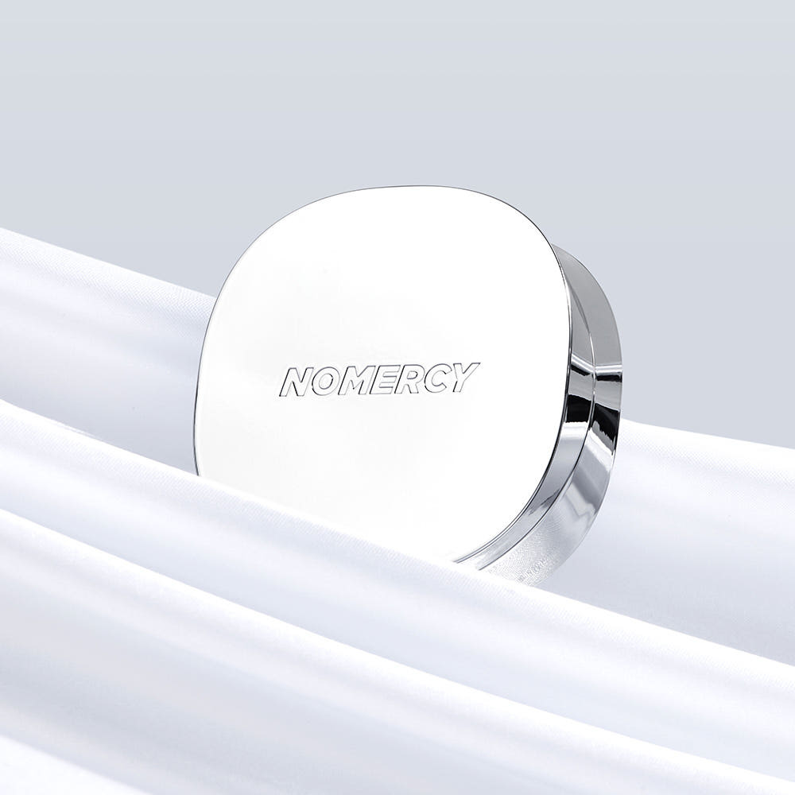
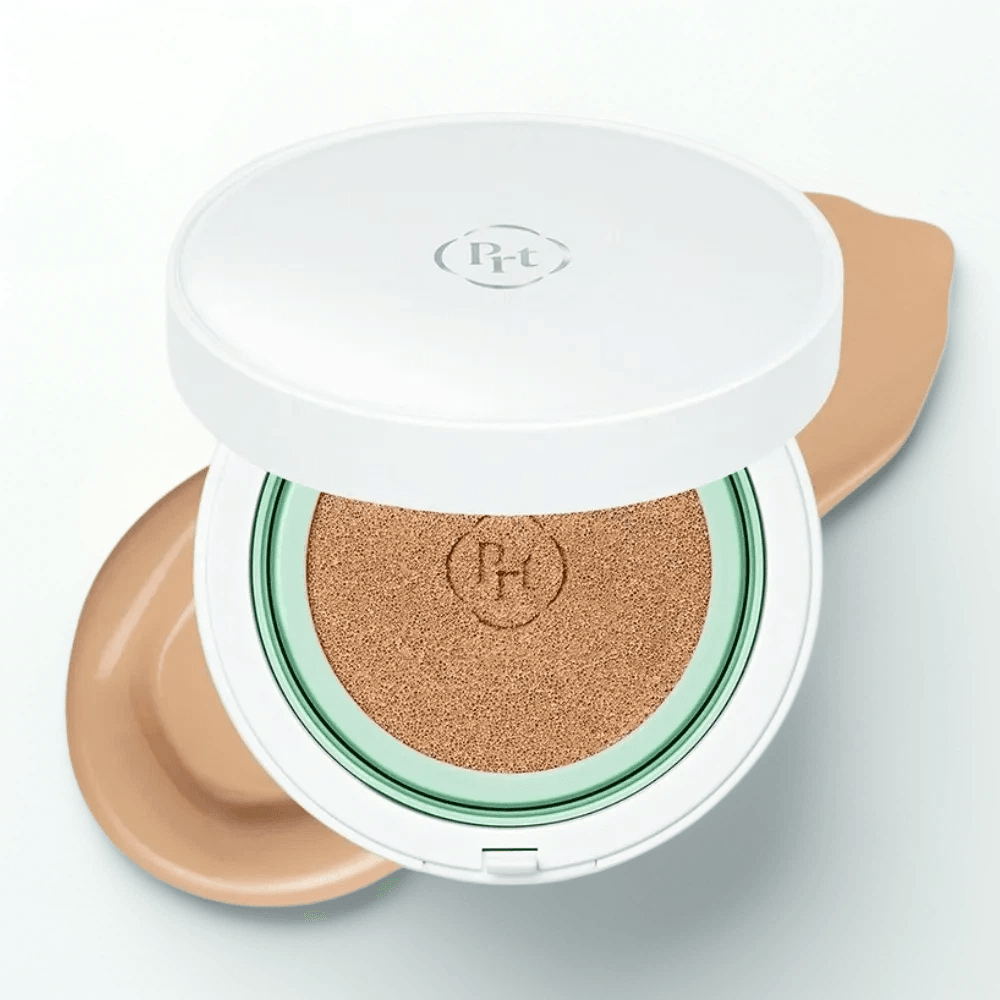

Home › Korean Cushion
6 Best Korean Cushions for Glass Skin (2026)
Korean skincare worth trying
I rounded up 6 Korean cushion worth knowing — the ones K-beauty fans keep coming back to. Real products, honest notes, and roughly what they cost. Prices are approximate; check the retailer for today's price.

Gonyani Pouch Keyring
Love the cute packaging design
≈ $30.2 (approx) · Ships worldwide
Check price on Amazon →
Pro Glutathion Glow Cushion
Great for a natural everyday look
≈ $27.9 (approx) · Ships worldwide
Check price on Amazon →
Birch Water Sun Cushion
Perfect for light coverage and sun protection
≈ $8.8 (approx) · Ships worldwide
Check price on Amazon →
UV Natural Tone Up Cushion
I like its smooth texture and tone-up effect
≈ $29.9 (approx) · Ships worldwide
Check price on Amazon →
No Mercy Sleek Cushion
Great for oily skin types like mine
≈ $19.7 (approx) · Ships worldwide
Check price on Amazon →
Seoul Wonder Relief Centella BB Cushion
So soothing and calming on my skin
≈ $39.8 (approx) · Ships worldwide
Check price on Amazon →Save my faves now
Prices are approximate and pulled from public shopping data; always check the retailer for the current price and shade/size before buying.